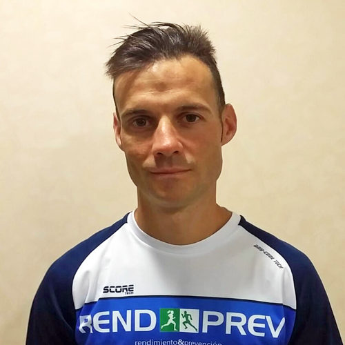
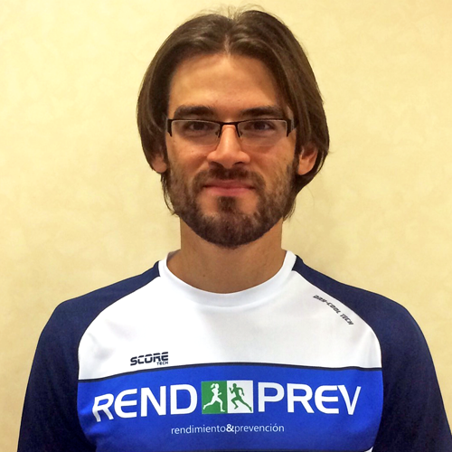

Equipo Multidisciplinar
REND & PREV se compone de un equipo multidisciplinar con el objetivo de cubrir todas y cada una de las fases del ciclo de vida deportivo que marca nuestra filosofía como centro deportivo.
Este proyecto está formado en la actualidad por 9 personas, las cuales llevarán a cabo un trabajo minucioso, cuidando hasta el más mínimo detalle para alcanzar el objetivo planteado inicialmente.
Es por ello que presentamos a los profesionales que ponen su esfuerzo al servicio de todos y cada uno de vosotros para acompañaros en vuestro caminar a la meta que os propongáis. Estos profesionales son:
Tu éxito es nuestro éxito, el límite lo pones tú.



